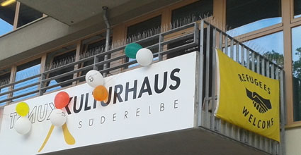

|

In Kooperation mit der Initiative "Willkommen in Süderelbe" findet jeden Montag das "Café Welcome" statt. In der Zeit von 15-18 Uhr öffnet dazu das Offene Atelier mit der Kulturhaus-Künstlerin Gabriele Wendland und die Tanzwerkstatt mit Tanzpädagogin Wiebke Heinrich. Täglich finden Deutsch-Sprachkurse in den Räumen des Kulturhauses bzw. des BGZ statt. Einzelne Geflüchtete mit Interesse an bildender Kunst oder afrikanischem Trommeln sind auch in den Kursangeboten des Kulturhauses willkommen! Zur Zeit warten 3 Konzertgitarren, arabische Saiteninstrumente und diverse Trommeln auf Musiker aus den entsprechenden Ländern, um eine Musikgruppe mit Geflüchteten und Deutschen starten zu lassen. "Jobs für Flüchtlinge" - Initiative: http://www.jobs-fuer-fluechtlinge.de (auf Deutsch) http://www.freelancer.international/refugee (für englischsprachige Flüchtlinge) http://www.freelance-market/worksample/12864.pdf (Zweisprachiges Plakat mit Eintragsbedingungen für Flüchtlinge) |